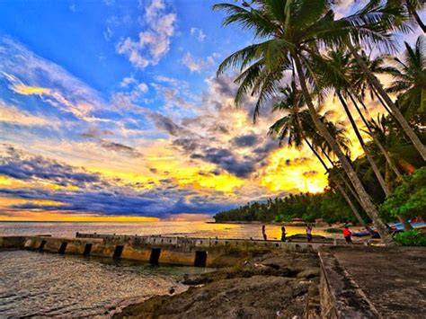
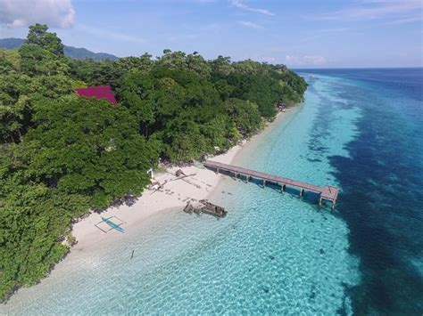

Destinasi Wisata Kota Ambon
Selamat datang dan Selamat membaca :)
1. Pantai Pintu Kota

Pantai Pintu Kota merupakan salah satu destinasi wisata yang . . .
2. Pantai Lubang Buaya

Namanya yang sepintas terdengar menyeramkan, berasal dari lengkungan garis . . .
3. Pantai Natsepa

Letak Pantai Natsepa tepatnya ada di wilayah Suli yang merupakan . . .
4. Pantai Namalatu
Pantai Namalutu memiliki deretan pohon kelapa di sepanjang pantainya . . .
5. Pantai Liang
Pantai Liang memiliki pemandangan yang tak hanya menyegarkan mata . . .